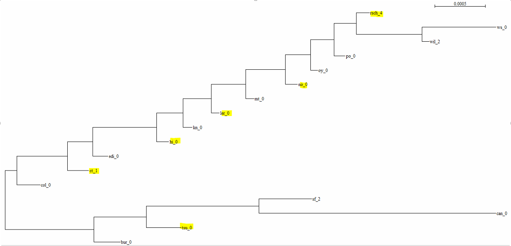
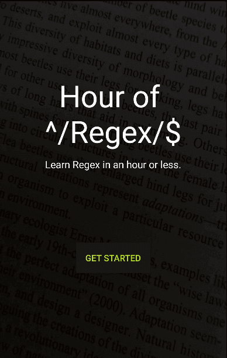
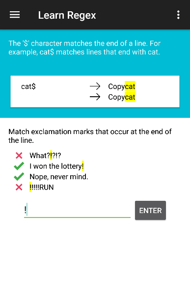
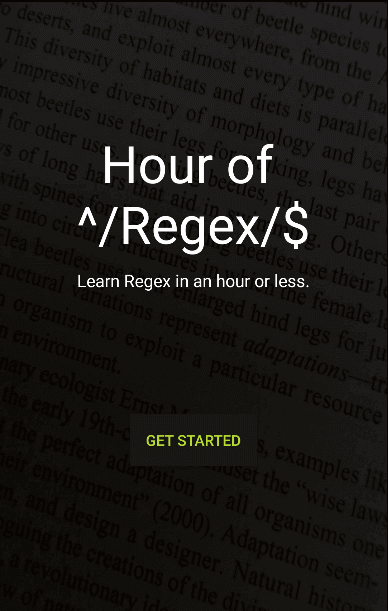
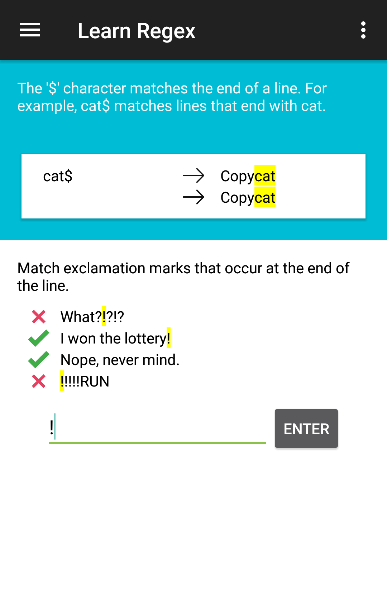

I'm a student at the University of Waterloo pursuing degrees in both Computer Science and Biology. I'm passionate about programming to make sense of large datasets and to solve real-world problems. My work so far has been primarily in bioinformatics, specifically whole-genome analysis, but I'm always open to learning new technologies and applying my skills to new challenges and datasets. I also dabble a bit in indie game development.
I'm actively looking for co-op opportunites and for interesting projects projects to get involved with.
Wet Lab Experience
Working as a research assistant in the Lolle Lab at the University of Waterloo, I've gained experience with some fundamental plant and molecular biology techniques including:
- preparing DNA minipreps
- gel electrophoresis
- running PCR reactions
- perfoming crosses of different plant lines
Bioinformatics

Project Description
The tree above depicts the evolutionary relationships of 17 ecotypes of Arabidopsis thaliana from locations across the northern hemisphere. I constructed it by creating seperate alignments of over 100 genes and and concatenating them, then using PhyML. Building this tree was the first step for my research in the Doxey Lab at the University of Waterloo, where I was interested in seeing if various insertions and deletions in the Arabidopsis genome formed monophyletic groups.
Using the same sequences, various large indels were mapped to the tree. The distribution of these insertions and deletions was often paraphyletic, as opposed to being localized in one clade of the tree, as was expected. For example, the yellow highlights on the tree above point out accessions of Arabidopsis that have a similar sized deletion, between 300 and 375 bp, at the same loci on Chromosome 4, on the Frigida gene, which ensures the plant goes through a cold period between successive flowerings. The plants with the deletion are throughly spread out on the tree, however it is likely the actual removal of DNA from the sequence occured only once, due to the similarity in size and loci for each sequence variant.
Skills Aquired
My work with Professor Doxey has given my exposure to
- searching for sequences and information in the NCBI database and others like it
- using software and considering various models to construct multiple sequence alignments and phylogenetic trees
- writing short bash scripts and larger C++ programs to clean data and convert it to the desired format for a particular program
- performing quantitative analysis of data using R, Python, and Bash
 


